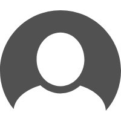

<ion-content>
  <div class="amap-zoomcontrol">

    <!-- <div #zoom_in class="button button-balanced amap-zoom-touch-plus" (click)="onClick1()">
      <div>+</div>
    </div>
    <div #zoom_out class="button button-balanced amap-zoom-touch-minus" (click)="onClick2()">
      <div>−</div>
    </div> -->
  </div>
  <ion-fab right edge>
    <button ion-fab color="vibrant" mini><ion-icon name="add"></ion-icon></button>
    <ion-fab-list>
      <button ion-fab><ion-icon name="logo-facebook"></ion-icon></button>
      <button ion-fab><ion-icon name="logo-twitter"></ion-icon></button>
      <button ion-fab><ion-icon name="logo-vimeo"></ion-icon></button>
      <button ion-fab><ion-icon name="logo-googleplus"></ion-icon></button>
    </ion-fab-list>
  </ion-fab>
  <!-- user button -->
  <button ion-fab top color="vibrant" class="iconType" (click)="login()">
      
  </button>
  <!-- map -->
  <div #map_container class="map_container">
  
  </div>

</ion-content>

